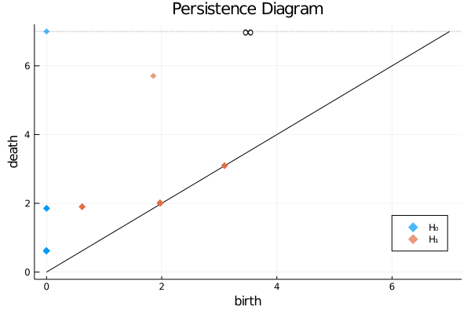
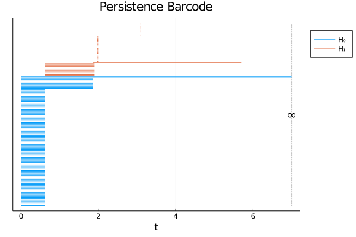
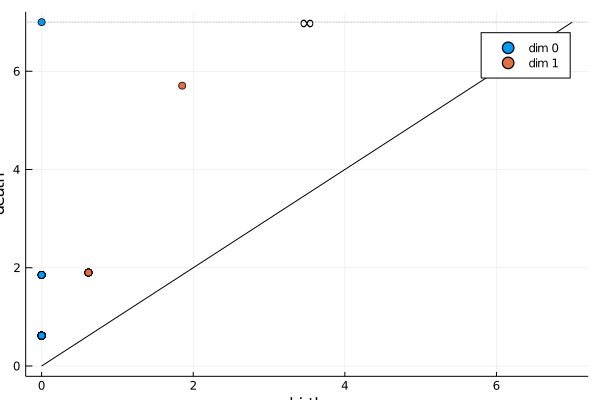
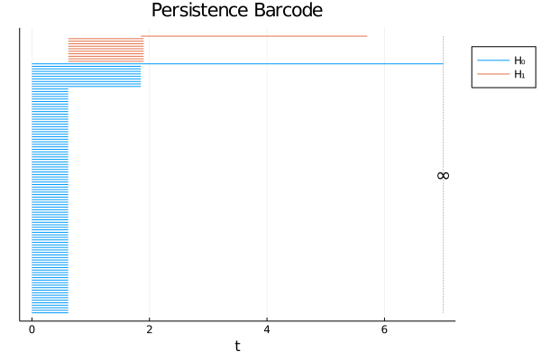

Quick Start
This package is still under development and is currently unregistered. To install it, run the following.
using Pkg
Pkg.add("https://github.com/mtsch/Ripserer.jl")Generate 100 points sampled from a torus.
n = 10
r = 1
R = 4
torus = [((R + r*cos(θ))*cos(φ), (R + r*cos(θ))*sin(φ), r*sin(θ))
for θ in range(0, 2π, length=n+1)[1:end-1]
for φ in range(0, 2π, length=n+1)[1:end-1]]
length(torus)100Run Ripserer.
using Ripserer
result = ripserer(torus)2-element Array{PersistenceDiagram{PersistenceInterval{Float64,Nothing}},1}:
100-element 0-dimensional PersistenceDiagram
41-element 1-dimensional PersistenceDiagramPlot the result as a persistence diagram or barcode.
using Plots; gr()
plot(result)
barcode(result) 
We notice some noise around the diagonal. This can be mitigated by running Ripserer with ripserer(torus, ratio=2) or by simply filtering the diagram.
result[2] = filter(x -> death(x) > 2birth(x), result[2])
plot(result)
barcode(result) 